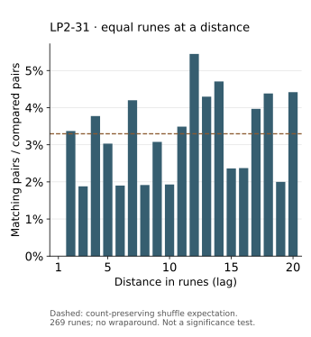

Rune matches at a distance: lag coincidences
Compare runes at fixed distances, reproduce exact pair counts, and distinguish descriptive peaks from evidence of a period.
On this page
A lag is a distance between positions in a sequence. At lag 2, compare each rune with the rune two places later. Counting equal pairs gives an order-dependent description of the text: rearranging the same symbols can change the result, even when whole-page IoC stays unchanged.
A five-symbol example
For the teaching sequence ABABA, lag 2 makes three comparisons:
Position: 0 1 2 3 4
Sequence: A B A B A
Compare 0 with 2: A = A
Compare 1 with 3: B = B
Compare 2 with 4: A = A
Matches: 3 out of 3There is no comparison from the final A back to the beginning. This tool does not wrap around. Its complete result for the example is:
| Lag | Equal pairs | Pairs compared | Rate |
|---|---|---|---|
| 1 | 0 | 4 | 0 |
| 2 | 3 | 3 | 1 |
| 3 | 0 | 2 | 0 |
| 4 | 1 | 1 | 1 |
The rate at lag 4 is also 1, but rests on just one pair. Always keep the denominator beside the rate. A large value supported by very few comparisons is not equivalent to a persistent pattern across many positions.
Reproduce the manuscript calculation
Extract the reference-data bundle with its folders intact. Python 3 and its standard library are sufficient:
python scripts/rune_lag_matches.py lp2-31 --max-lag 4
python scripts/rune_lag_matches.py lp2-31 --max-lag 20 --output lp2-31-lags.json
python scripts/test_rune_lag_matches.pyThe first command reports 0/268, 9/267, 5/266, and 10/265 for lags 1–4. The JSON also gives reduced fractions and decimal rates. These are descriptive counts from the archived 269-rune stream, not a newly established key period or solution.
The default maximum lag is 20; explicitly choose a smaller value for a shorter stream. Valid lags run from 1 to one less than the rune count. The output option refuses to overwrite an existing file. The script uses rune_ngrams.py from the same bundle to identify runes; keep that helper beside it.
Inspect all twenty distances

Download the CSV table for a spreadsheet, or the JSON report for the complete counting rule and shuffle model. Each CSV row retains its numerator, denominator, input path and source hash. The dashed line is an expected rate under the stated model, not a cutoff for an interesting result.
To reproduce the chart, use the extracted reference-data bundle and install matplotlib in your Python environment, then run:
python scripts/plot_rune_lags.py --output my-lag-chart.svgThe plotting script reads the included JSON; it does not recalculate or alter the rune stream. The counting script remains standard-library only. Keep the plotting-library version with shared figures; visual formatting can vary between versions. Existing output files are not overwritten.
What exactly is counted?
The script retains archived runes in order, including headings, and removes non-runes. Pairs may therefore cross word, line, and paragraph breaks, but never page boundaries. It performs no spelling conversion, correction, decoding, or interruption skipping. The report records the input file, its SHA-256, the alphabet, and its hash.
For a stream of length n and a lag d, the denominator is n − d. The numerator counts indices i = 0, …, n − d − 1 for which x[i] = x[i+d]. These are forward pairs counted once. They are different from the all-position ordered pairs in the ordinary IoC formula.
What would a shuffled stream give?
Under a uniform random rearrangement preserving the symbol counts, any two distinct positions have expected equality rate Σ c(c−1) / [n(n−1)]. Each fixed-lag pair uses two distinct positions, so averaging their equality indicators gives that same expectation. This derives an expected rate, not a distribution of possible peaks.
The report includes this fraction as shuffle_expected_rate_fraction. It is not a p-value, a confidence interval, or a threshold for a meaningful result. Pairs can overlap, and results at different lags share the same input. If you select the largest result after scanning many lags, a chance comparison must repeat that selection procedure. See null models and selection.
How all distances add up to IoC
Every pair of distinct positions has exactly one positive distance. If you calculate all lags from 1 through n − 1, you count every forward pair once. Consequently:
- Matching forward pairs
Σ c(c−1) / 2- All forward pairs
n(n−1) / 2- Ratio of these totals
- Whole-page IoC
Here c is each symbol’s frequency. Both totals are half the ordered-pair totals used in the IoC formula, so their ratio is unchanged. This is an identity for the observed stream, not just an average expected from shuffling.
In the ABABA example, combine the counts: (0 + 3 + 0 + 1) / (4 + 3 + 2 + 1) = 4/10. The same stream has three As and two Bs, giving IoC (3×2 + 2×1) / (5×4) = 8/20. Both equal 2/5.
Do not average the four rates equally. That would give (0 + 1 + 0 + 1) / 4 = 1/2, because it assigns a one-pair lag the same weight as a four-pair lag. Weight each rate by its number of comparisons, or simply divide the summed numerators by the summed denominators.
The LP2-31 chart above includes only lags 1–20, so its pooled rate need not equal whole-page IoC. For the identity, all 268 distances are required. Lag counts reveal how matching pairs are distributed over distances; their full total supplies no independent evidence beyond the same frequency counts.
What the result cannot decide
An elevated lag can motivate a more specific test; it does not identify a cipher or key length by itself. Changing the heading policy, page boundaries, or skipped positions changes the sequence being measured. Record those choices before comparing reports.
Renaming symbols consistently leaves equality unchanged. Reversing the whole stream also preserves the count at each lag, because it pairs the same positions in the opposite direction. This statistic therefore cannot choose between a stream and its reversal. For local repeated patterns and their source positions, use the n-gram tool; for the broader principle, read what operations preserve.
Files and checks
Calculation script · Checks. Tests also check the all-lag identity on every three-symbol sequence of lengths 2–6. They cover the hand example, valid lag bounds, symbol renaming, reversal, and the expected rate averaged over all six distinct arrangements of AABB. The archived-page check verifies the 269-rune scope and its comparison denominators. These validate the stated calculation, not the original photographic transcription.